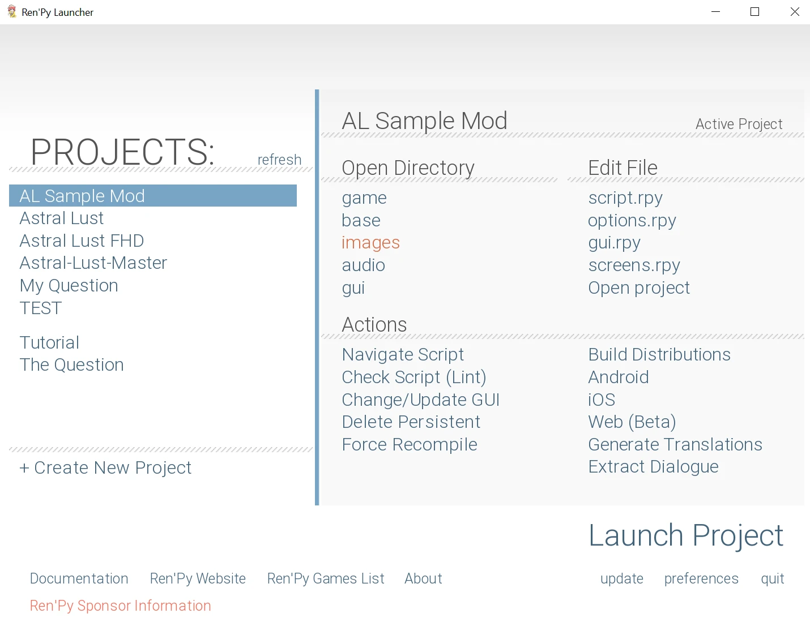
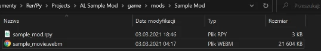
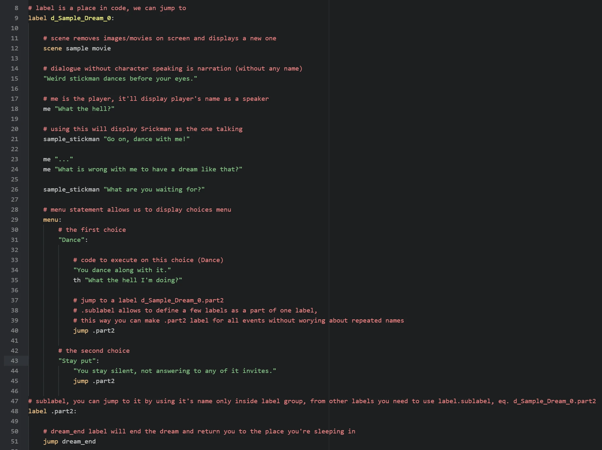
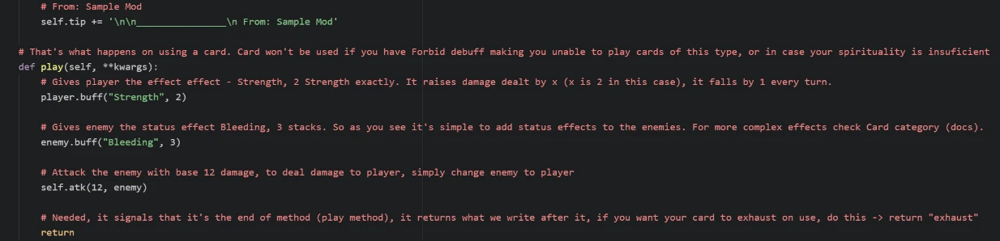
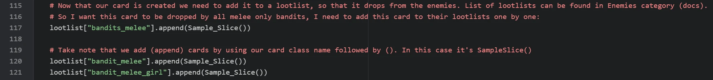

Get Started - Astral Lust Modding
Welcome to Astral Lust modding tutorial! In here I’ll explain how to create your own mod. I’ll show how to start, make your own card, character, and a simple animated dream.
Step 1. Preparation for modding
To get started with modding AL (Astral Lust) you don’t need programming knowledge, you don’t even need to know basics about Ren'Py.
Of course to do more advanced stuff, you’ll need to know them, but there are many things you can do by following this documentation, without any other requirements.
You should start by downloading RenPy. It’s needed to compile your mod, in other words - make it work. Once you launch RenPy it’ll ask you for text editor, I personally use Atom, you can check in google what they look like, and choose the one that you like the most.
You’ll need to select RenPy’s projects folder, and you need to put Astral Lust to the folder you’ve chosen. Before launching the project you need to decompile vanilla script with Un.rpyc, otherwise game won’t start.
Next thing to download is AL Mod Toolkit, it enables console and developer tools in-game, you need to put it into:
Windows/Linux:
AstralLust\Mac:
AstralLust\Contents\Resources\autorun\
Great, now that you have everything ready you can start to make your own mod! (You can rename AstralLust folder to whatever name you want, this name will be shown in projects)
Step 2. Creating new mod
After you done all preparations, run RenPy. You’ll see something like this:
Under Edit File tab chose script.rpy, now you need to create your mod’s folder in game/mods folder, as shown below:
Now using the same way we create a new file inside our folder, you can name it whatever you want, the important thing is to include .rpy extension at the end. I’ll name my file sample_mod.rpy. Now that you’ve your first file, open it by selecting it from file tree.
Step 3. Adding animated dream
What (arguably) is the most important thing in RenPy games? Events. So let’s make our own event, a dream to be exact.
We want to add animated background, so what we need is, well, a video. It can be .mp4 or .webm. We can put it into our mod folder.
So we have our movie, let’s define it in the script, it needs to be defined outside of a label (you’ll understand later).
It goes like this: image my_movie_name = Movie(play="mods/My Mod Name/my_movie.webm", loop = True, size = {gui.game_width, gui.game_height})
Now that we have our animation, let’s define a character that’ll speak in our label (also outside of a label). We can do this with
define our_character = Character("char_name"). So I want my character to be a stickman. Don’t ask why, I just want.
After we define our character, it’s time to finally create a label. What is it? Label is a point in a story to which you can jump later on. label mylabelname:
For compatibility purpose you should add your unique prefix to label names so that there are never two label with the same name (it’ll throw an error).
Important thing to note is that dreams need special label name to autodetect (d_mydream_0, starts with d_, then your own dream (with prefix) name, and at the end dream type. _0, 0 stands for normal or positive dream).
I’ll name my dream as d_Sample_Dream_0, when dream name is converted to text _ is changed to empty space.
After all we are all set up.
Let’s finally use this movie, we can display it with show or scene statement.
What’s the difference? Scene removes previous images, it’s good to use it if we have image covering whole screen and we don’t want anything else to display.
Our movie covers the whole screen and we don’t want other images or movies on screen so let’s use scene my_movie_name. You can add transiton with fade or with dissolve.
Alright, Now we need to write the scene, dialogue, choices, etc. This all is covered below.
Dream is ready!
Step 4. Adding a card
Now that we have a dream, it’s time to do something a little more complex. Let’s make a card.
We need to initialize a card at init time so we start by adding (outside of label) init 11 python:.
As you might have noticed, when we use : the lines below are indented.
Basically speaking it means that below code belongs to the thing with :.
Indentation shows the code this belonging.
In python indentations are the key unlike in most other languages where they are just cosmetic.
Alright, enough about other things, other thing you should remember is that AL reserves init -999 to 10 & 995-999, so you should use init 11 to init 994. The higher the init the later it loads (and overwrites previous changes if needed). Unless you know what you’re doing, don’t use reserved init numbers.
Finally, after this sermon comes a time to create our card!
We need to start by defining class like this class OurClassName(Card): of course change OurClassName to your name.
You can name it as class prefix_cardname(Card):. More info on this in comments in example script down below.
As you probably noticed (or not) class definition ends with :, so does it mean next line will be indented?
Of course it’ll be indented, didn’t you read my sermon? If it’s not we will see an error when we try to launch our game.
Now the indented code -> def __init__(self):. def methodName(): is defining a method or function.
This is method commonly used in python as a constructor, it’ll assign attributes to our card.
You probably took note of : at the end.
Does it mean there will be second indentation? Yes! Great, right? Indentations look neat.
So in def __init__(self): we need to assign attributes to our class, or as you prefer variables.
When assigning and using these attributes within our class we need to type self. before them.
Like this self.name = "MyCard".
Cards have those attributes:
name- self explainingsp- spirituality costca- category:Offensive
Defensive
Ability
Power
Tarot
ra- rarity:Ordinary
Extraordinary
Mythical
Angelic
Divine
tip- card’s tooltip to display on hover (explained in example script)
So our card now can be created, but it still does nothing.
Let’s change that.
We need to create play() method.
Like this def play(self, **kwargs):.
Remember to return to indentation depth of class! In other words def play needs to be at the same indentation as def __init__.
Now you need to let your creativity take over. To attack use self.atk(dmg, enemy) change damage to number you want, like this self.atk(5, enemy).
To change status effects use buff() method. It works like this player.buff(buff, amt, minus = True).
By default status effect can be lowered below 0, to make it stop at 0 descrease effects with minus = False.
Let’s say you want to decrease enemy’s Vulnerable effect by 5, but you don’t want it to be below 0.
It works like that enemy.buff("Vulnerable", -5, False).
Important thing is you need to add return at the end of method.
It signals the program that it’s the end of method.
You can use it like this return "exhaust" if you want to exhaust a card, otherwise use just return.
Example below.
We have a working card. Nice! One thing.. how do you get it?? It’s not like a dream, which happens randomly.
This is actually the easiest part of this tutorial. Just read the comments in the example below, nothing more is needed to be said.
Remember to create your card image! Check documentation’s Cards to get card templates and how to use them. Paint is enough to make a card, better programs (like free paint.net I’m using) are welcome, though. The best for a job like this would probably be Corel or PhotoShop.
Step 5. Test with console
Done!
Our card and dream were successfully created! Now what remains is to check them in-game.
Load your save and open the console by pressing SHIFT + O
To try our dream -> jump d_Sample_Dream_0 Change dream label to your label.
To add our card to hand -> inventory.cards.append(Sample_Slice()) Again, change Sample_Slice to your card’s class name
Congratulations! You’ve officially made your first mod for the Astral Lust! Even Grace is proud of you!
Now that you know how, you can add more, check the documentation for info how to do that. Remember - have fun! Will you be the first to change the Dragon images to Thomas the Tank Engine? ;) It was made already by Chuck.
Don’t hesitate to ask me questions on official Astral Lust Discord server. You can also post your mods there, in #mods-releases channel.
Next Step
While where you should go from now on depends on what you want to make, I would recommend Creation Guide to learn many basic things about Renpy’s working.
Final Script - Comments
The same code can be found in game/mods/Sample Mod/sample_mod.rpy.
1# define the movie used in a dream, you need to define all movies, size = {gui.game_width, gui.game_height} makes the movie play fullscreen no matter of its size or game version, 4K or 1080p
2image sample movie = Movie(play="mods/Sample Mod/sample_movie.webm", loop = True, size = {gui.game_width, gui.game_height})
3
4# define new character with name Stickman and light blue colored name - Hex(#216ba2)
5define sample_stickman = Character("Stickman", who_color = "#216ba2")
6
7# label is a place in code, we can jump to
8label d_Sample_Dream_0:
9
10 # scene removes images/movies on screen and displays a new one
11 scene sample movie
12
13 # dialogue without character speaking is narration (without any name)
14 "Weird stickman dances before your eyes."
15
16 # me is the player, it'll display player's name as a speaker
17 me "What the hell?"
18
19 # using this will display Srickman as the one talking
20 sample_stickman "Go on, dance with me!"
21
22 me "..."
23 me "What is wrong with me to have a dream like that?"
24
25 sample_stickman "What are you waiting for?"
26
27 # menu statement allows us to display choices menu
28 menu:
29 # the first choice
30 "Dance":
31
32 # code to execute on this choice (Dance)
33 "You dance along with it."
34 th "What the hell I'm doing?"
35
36 # jump to a label d_Sample_Dream_0.part2
37 # .sublabel allows to define a few labels as a part of one label,
38 # this way you can make .part2 label for all events without worying about repeated names
39 jump .part2
40
41 # the second choice
42 "Stay put":
43 "You stay silent, not answering to any of it invites."
44 jump .part2
45
46# sublabel, you can jump to it by using it's name only inside label group, from other labels you need to use label.sublabel, eq. d_Sample_Dream_0.part2
47label .part2:
48
49 # dream_end label will end the dream and return you to the place you're sleeping in
50 jump dream_end
51
52# init means it loads on game launch, 11 is the load order, the higher the later it'll load, overwriting things if needed.
53# You shouldn't use init below 11, it is reserved for vanilla, it might cause incompatibility so unless you don't know what you're doing, don't do this.
54init 11 python:
55
56 # Your class, you can create cards by calling class name, remember class name needs to be unique or game will throw an error on lauch. You can add your unique prefix to make it much less likely.
57 # My prefix is Sample_
58 # It's important for card's class to have | (Card): | at the end, it's needed as it gives the cards their functionality
59 class Sample_Slice(Card):
60
61 # Init is a so called constructor, as the name suggests it's used to construct our card, so our card will be created with attributes given below.
62 def __init__(self):
63
64 # card name / .webp image name. This image needs to be put (for now) in game/images/Cards/ folder.
65 # In the future I'm going to add compatibility for adding custom paths.
66 # To make sure this card is compatible with other mods I've added !Sample! prefix to card name.
67 # Its image need to be | !Sample! Slice.webp | You should add your prefix (nickname) using !Prefix! like me, I plan to add some functionality to this.
68 # While !Sample! will show when destroying card, I'll change it later, so it's not shown.
69 self.name = "!Sample! Slice"
70
71 # spirituality cost
72 self.sp = 3
73
74 # Card category -> Offensive, Defensive, Ability, Power, Tarot
75 self.ca = "Offensive" # category
76
77 # Card rarity, from the lowest to the highest -> Ordinary, Extraordinary, Mythical, Angelic, Divine
78 # Special rarities -> Tarot, Unique (for advanced users)
79 self.ra = "Mythical"
80
81 # Card tooltip, you can write what you want in tooltip or use | self.tip = None | if there is no tooltip for your card.
82 # General formula is '> FirstBuff:\n'+str(player.eff["FirstBuff"][1]) + '\n\n> SecondBuff:\n'+str(player.eff["SecondBuff"][1])
83 # You can add next buffs by adding to the end this code | + '\n\n> NextBuff:\n'+str(player.eff["NextBuff"][1])
84 # Naturally you need to change FirstBuff, etc. to names of buffs, for all available buffs check documentation's Cards category
85 self.tip = '> Strength:\n'+str(player.eff["Strength"][1]) + '\n\n> Bleeding:\n'+str(player.eff["Bleeding"][1])
86
87 # It's a good practice to notify players the mod the card is from, that way if they encounter bugs they can notify you.
88 # self.tip += '' mean we want to add text to what is already in there.
89 # \n is a tag for a new line, so below text will add something like this:
90
91 # Bleeding:
92 # .... tip .....
93 #
94 # ________________
95 # From: Sample Mod
96 self.tip += '\n\n________________\n From: Sample Mod'
97
98 # That's what happens on using a card. Card won't be used if you have Forbid debuff making you unable to play cards of this type, or in case your spirituality is insuficient
99 def play(self, **kwargs):
100
101 # Gives player the effect effect - Strength, 2 Strength exactly. It raises damage dealt by x (x is 2 in this case), it falls by 1 every turn.
102 player.buff("Strength", 2)
103
104 # Gives enemy the status effect Bleeding, 3 stacks. So as you see it's simple to add status effects to the enemies. For more complex effects check Card category (docs).
105 enemy.buff("Bleeding", 3)
106
107 # Attack the enemy with base 12 damage, to deal damage to player, simply change enemy to player
108 self.atk(12, enemy)
109
110 # Needed, it signals that it's the end of method (play method), it returns what we write after it, if you want your card to exhaust on use, do this -> return "exhaust"
111 return
112
113 # Now that our card is created we need to add it to a lootlist, so that it drops from the enemies. List of lootlists can be found in Enemies category (docs).
114 # So I want this card to be dropped by all melee only bandits, I need to add this card to their lootlists one by one:
115 lootlist["bandits_melee"].append(Sample_Slice())
116
117 # Take note that we add (append) cards by using our card class name followed by (). In this case it's SampleSlice()
118 lootlist["bandit_melee"].append(Sample_Slice())
119 lootlist["bandit_melee_girl"].append(Sample_Slice())
120
121 # Remember to create your card image!
122 # Check documentation's Cards to get card templates and how to use them
123 # Paint is enough to make a card, better programs (like free paint.net I'm using) are welcome, though.
124 # The best for a job like this would probably be Corel or PhotoShop.
125
126 # Done!
127 # -----
128 # Our card and dream were succesfully created!
129 # Now what remains is to check them in-game.
130 #
131 # Load your save and open the console by pressing SHIFT + O
132 #
133 # To try our dream -> jump d_Sample_Dream_0
134 # Change dream label to your label
135 #
136 # To add our card to hand -> inventory.cards.append(Sample_Slice())
137 # Again, change Sample_Slice to your card's class name
138 #
139 # Congratulations!
140 # You've officialy made your first mod for the Astral Lust!
141 # Even Grace is proud of you!
142 #
143 # Now that you know how, you can add more, check the documentation for info how to do that.
144 # Remember - have fun! Will you be the first to change the Dragon images to Thomas the Tank Engine? ;)
145 #
146 # Don't hesitate to ask me questions on official Astral Lust Discord server. You can also post your mods there, in #mods-releases channel.
Final Script - Clean
1image sample movie = Movie(play="mods/Sample Mod/sample_movie.webm", loop = True, size = {gui.game_width, gui.game_height})
2
3define sample_stickman = Character("Stickman", who_color = "#216ba2")
4
5label d_Sample_Dream_0:
6 scene sample movie
7
8 "Weird stickman dances before your eyes."
9 me "What the hell?"
10 sample_stickman "Go on, dance with me!"
11 me "..."
12 me "What is wrong with me to have a dream like that?"
13 sample_stickman "What are you waiting for?"
14
15 menu:
16 "Dance":
17 "You dance along with it."
18 th "What the hell I'm doing?"
19
20 jump .part2
21
22 "Stay put":
23 "You stay silent, not answering to any of it invites."
24 jump .part2
25
26label .part2:
27
28 jump dream_end
29
30init 11 python:
31 class Sample_Slice(Card):
32 def __init__(self):
33 self.name = "!Sample! Slice"
34 self.sp = 3
35 self.ca = "Offensive"
36 self.ra = "Mythical"
37 self.tip = '> Strength:\n'+str(player.eff["Strength"][1]) + '\n\n> Bleeding:\n'+str(player.eff["Bleeding"][1])
38 self.tip += '\n\n________________\n From: Sample Mod'
39
40 def play(self, **kwargs):
41 player.buff("Strength", 2)
42 enemy.buff("Bleeding", 3)
43 self.atk(12, enemy)
44
45 return
46
47lootlist["bandits_melee"].append(Sample_Slice())
48lootlist["bandit_melee"].append(Sample_Slice())
49lootlist["bandit_melee_girl"].append(Sample_Slice())